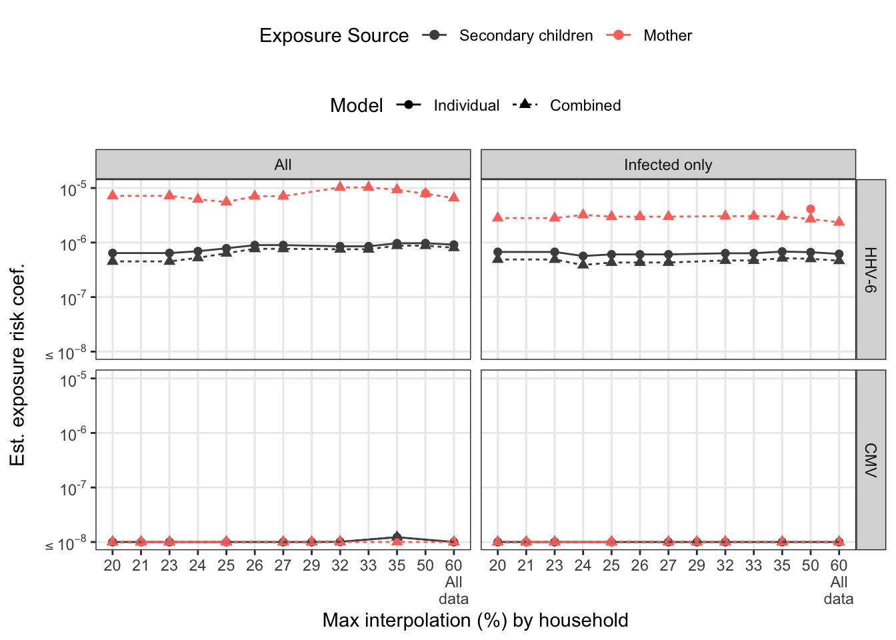
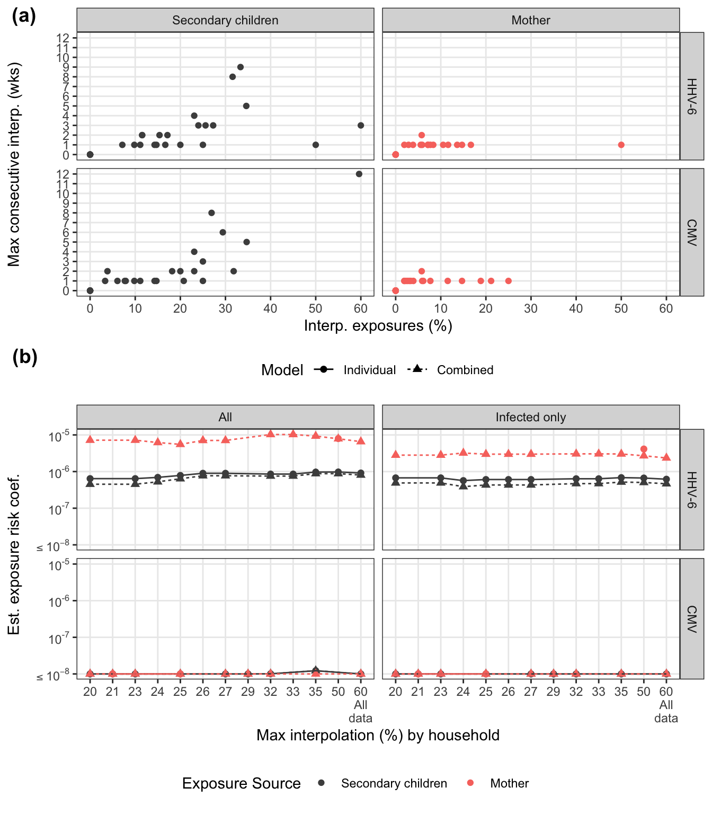

Model fitting and sensitivity analysis
Bryan Mayer
2019-11-19f
Last updated: 2019-11-19
Checks: 6 1
Knit directory: HHVtransmission/
This reproducible R Markdown analysis was created with workflowr (version 1.4.0). The Checks tab describes the reproducibility checks that were applied when the results were created. The Past versions tab lists the development history.
The R Markdown file has unstaged changes. To know which version of the R Markdown file created these results, you’ll want to first commit it to the Git repo. If you’re still working on the analysis, you can ignore this warning. When you’re finished, you can run wflow_publish to commit the R Markdown file and build the HTML.
Great job! The global environment was empty. Objects defined in the global environment can affect the analysis in your R Markdown file in unknown ways. For reproduciblity it’s best to always run the code in an empty environment.
The command set.seed(20190318) was run prior to running the code in the R Markdown file. Setting a seed ensures that any results that rely on randomness, e.g. subsampling or permutations, are reproducible.
Great job! Recording the operating system, R version, and package versions is critical for reproducibility.
Nice! There were no cached chunks for this analysis, so you can be confident that you successfully produced the results during this run.
Great job! Using relative paths to the files within your workflowr project makes it easier to run your code on other machines.
Great! You are using Git for version control. Tracking code development and connecting the code version to the results is critical for reproducibility. The version displayed above was the version of the Git repository at the time these results were generated.
Note that you need to be careful to ensure that all relevant files for the analysis have been committed to Git prior to generating the results (you can use wflow_publish or wflow_git_commit). workflowr only checks the R Markdown file, but you know if there are other scripts or data files that it depends on. Below is the status of the Git repository when the results were generated:
Ignored files:
Ignored: .DS_Store
Ignored: .Rhistory
Ignored: .Rproj.user/
Ignored: analysis/.Rhistory
Ignored: docs/.DS_Store
Ignored: docs/figure/.DS_Store
Ignored: output/.DS_Store
Untracked files:
Untracked: code/optim_functions.R
Untracked: docs/figure/transmission-risk-sensitivity.Rmd/
Untracked: output/model_results.RData
Untracked: output/sens_fits.RData
Untracked: output/sensitivity-analysis/
Unstaged changes:
Modified: analysis/setup-exposure-data.Rmd
Modified: analysis/transmission-risk-sensitivity.Rmd
Modified: analysis/transmission-risk.Rmd
Modified: code/risk_fit_functions.R
Note that any generated files, e.g. HTML, png, CSS, etc., are not included in this status report because it is ok for generated content to have uncommitted changes.
These are the previous versions of the R Markdown and HTML files. If you’ve configured a remote Git repository (see ?wflow_git_remote), click on the hyperlinks in the table below to view them.
| File | Version | Author | Date | Message |
|---|---|---|---|---|
| Rmd | e6530b1 | Bryan Mayer | 2019-07-26 | mid code update with sensitivity analysis |
Background
This R markdown script performs all of the model fitting and sensitivity analysis. For pre-processing of the model data and a brief background on the model, see transmission model data setup and background.
Summary
Setup
library(tidyverse)
library(conflicted)
library(kableExtra)
library(cowplot)
library(scales)
library(lemon)
library(lhs)
theme_set(
theme_bw() +
theme(panel.grid.minor = element_blank(),
legend.position = "top")
)
conflict_prefer("filter", "dplyr")source("code/risk_fit_functions.R")
source("code/processing_functions.R")
source("code/optim_functions.R")
load("output/model_data.RData")
raw_dat = read_csv("data/PHICS_transmission_data.csv") %>%
subset(times >= infantdob &
((infantInfection == 0) | (infantInfection == 1 & times <= infantInfDate)) &
idpar != "P" & !Virus %in% c("ORL_HHV8", "ORL_HSV", "ORL_EBV") &
!(FamilyID == "AZ" & Virus == "ORL_HHV6")
) %>%
mutate(
virus = str_split_fixed(Virus, "_", n = 2)[,2],
virus = if_else(virus == "HHV6", "HHV-6", virus)
) %>% group_by(FamilyID) %>%
mutate(
infant_days = as.numeric(difftime(times, unique(infantdob), units = "days"))
)Parsed with column specification:
cols(
PatientID = col_character(),
FamilyID = col_character(),
idpar = col_character(),
momhiv = col_character(),
times = col_datetime(format = ""),
infantdob = col_datetime(format = ""),
infantInfection = col_double(),
infantInfDate = col_datetime(format = ""),
Virus = col_character(),
count = col_double()
)fit_loo = F
fit_sens = F
fit_final = F
if(!fit_loo) {
loo_sensitivity = read_rds("output/sensitivity-analysis/loo_fits.rds")
loo_sensitivity_final = read_rds("output/sensitivity-analysis/loo_fits_final.rds")
}
if(!fit_sens) load("output/sensitivity-analysis/sens_fits.RData")
max_consecutive = function(x, match_var = T){
if(!any(match_var %in% x)) return(0)
max(rle(x)$lengths[rle(x)$values == match_var])
}
sci_not <- function (x) ifelse(log10(x) <= -8, list(bquote(phantom(0) <= 10^-8)),
trans_format("log10",math_format(10^.x))(x))# use lhs initials
set.seed(10)
marginal_initials = -(20 * optimumLHS(25, 2))
combined_initials = -(20 * optimumLHS(25, 3))
# fits null, individual, and combined models
# assumed the initial valued are gliobally defined (above)
fit_models_tidy = function(wide_mod_dat, long_mod_dat){
null_risk_mod = wide_mod_dat %>%
group_by(virus, FamilyID) %>%
summarize(infected = max(infectious_1wk),
surv_weeks = max(c(0, infant_wks[which(infectious_1wk == 0)]))) %>%
group_by(virus) %>%
summarize(
null_beta = -log(1 - sum(infected) / sum(surv_weeks)),
null_loglik = null_beta * sum(surv_weeks) - log(1 - exp(-null_beta)) * sum(infected)
)
individual_mod = long_mod_dat %>%
group_by(virus, idpar) %>%
nest() %>%
mutate(
likdat = map(data, create_likdat),
total = map_dbl(data, ~ n_distinct(.x$FamilyID)),
fit_mod = map(likdat, marginal_fitter, initials = marginal_initials),
fit_res = map(fit_mod, tidy_fits)
) %>%
unnest(fit_res) %>%
left_join(null_risk_mod, by = "virus") %>%
mutate(
LLR_stat = 2 * (null_loglik - loglik),
pvalue = pchisq(LLR_stat, 1, lower.tail = F)
) %>%
select(-data,-likdat,-fit_mod) %>%
mutate(model = "Individual")
combined_mod = wide_mod_dat %>%
group_by(virus) %>%
nest() %>%
mutate(
likdat = map(data, create_likdat_combined),
total = map_dbl(data, ~ n_distinct(.x$FamilyID)),
fit_mod = map(likdat, combined_fitter, initials = combined_initials),
fit_res = map(fit_mod, tidy_fits_combined)
) %>%
unnest(fit_res) %>%
left_join(null_risk_mod, by = "virus") %>%
mutate(
LLR_stat = 2 * (null_loglik - loglik),
pvalue = pchisq(LLR_stat, 2, lower.tail = F)
) %>%
select(-data,-likdat,-fit_mod) %>%
gather(idpar, betaE, betaM, betaS) %>%
mutate(model = "Combined", idpar = str_remove_all(idpar, "beta"))
bind_rows(individual_mod, combined_mod)
}Leave-one-out model fitting
All data
loo_sensitivity = model_data %>%
select(virus, FamilyID) %>%
distinct() %>%
bind_rows(crossing(virus = c("CMV", "HHV-6"), FamilyID = "All")) %>%
pmap_df( ~ (
fit_models_tidy(
wide_mod_dat = subset(model_data, virus == ..1 & FamilyID != ..2),
long_mod_dat = subset(model_data_long, virus == ..1 &
FamilyID != ..2 & idpar != "HH")
) %>%
mutate(FamilyID = ..2)
))%>%
ungroup()
write_rds(loo_sensitivity, "output/sensitivity-analysis/loo_fits.rds")loo_pl = loo_sensitivity %>%
mutate(
virus = factor(virus, level = c("HHV-6", "CMV")),
FamilyID2 = factor(
FamilyID,
levels = c(unique(model_data$FamilyID),
"All"),
labels = c(unique(model_data$FamilyID),
"All data")
)
) %>%
ggplot(aes(x = FamilyID, y = pmax(betaE, 1e-8), color = idpar)) +
geom_point(size = 2) +
geom_path(aes(group = idpar)) +
scale_y_log10("Est. exposure risk coef.") +
scale_x_discrete("FamilyID left out") +
facet_grid(virus~model) +
scale_color_manual("Exposure Source", values = c("#F8766D", "grey30"),
breaks = c("S", "M"))+
theme(legend.position = "top", legend.box = "vertical") +
coord_flip()
loo_plfamAb_pl = raw_dat %>%
subset(FamilyID == "AB" & virus == "HHV-6") %>%
mutate(idpar2 = str_remove_all(PatientID, "AB-")) %>%
ungroup() %>%
select(infant_days, idpar2, count) %>%
pivot_wider(names_from = idpar2, values_from = count) %>%
mutate(S = if_else(is.na(S2), S1, log10(10^(S1) + 10^(S2)))) %>%
gather(idpar2, count, M, S, S1, S2) %>%
subset(!is.na(count)) %>%
mutate(
idpar2 = factor(
idpar2,
levels = c("M", "S1", "S2", "S"),
labels = c("Mother", "Secondary child 1", "Secondary child 2",
"Secondary children (sum)")
)
) %>%
ggplot(aes(x = infant_days, y = count, colour = idpar2,
shape = idpar2)) +
geom_point() +
scale_x_continuous("Days after infant AB birth") +
scale_y_continuous(expression(paste('HHV-6 log'[10], " VL"))) +
scale_color_manual("Household AB", values = c("#F8766D", "blue", "green", "grey30")) +
scale_shape_manual("Household AB", values = c(1,1,1,2)) +
geom_line() +
theme(legend.position = c(0.8, 0.25),
legend.background = element_rect(fill = NA))
famAb_pl
loo_sensitivity_final = model_data %>%
subset(!(FamilyID == "AB" & virus == "HHV-6")) %>%
select(virus, FamilyID) %>%
distinct() %>%
bind_rows(crossing(virus = c("CMV", "HHV-6"), FamilyID = "All")) %>%
pmap_df( ~ (
fit_models_tidy(
wide_mod_dat = subset(model_data, virus == ..1 & FamilyID != ..2 &
!(FamilyID == "AB" & virus == "HHV-6")),
long_mod_dat = subset(model_data_long, virus == ..1 &
FamilyID != ..2 & idpar != "HH" &
!(FamilyID == "AB" & virus == "HHV-6"))
) %>%
mutate(FamilyID = ..2)
)) %>%
ungroup()
write_rds(loo_sensitivity_final, "output/sensitivity-analysis/loo_fits_final.rds")Remove FamilyID AB from HHV-6
loo_pl2 = loo_sensitivity_final %>%
mutate(
virus = factor(virus, level = c("HHV-6", "CMV")),
FamilyID2 = factor(
FamilyID,
levels = c(unique(model_data$FamilyID),
"All"),
labels = c(unique(model_data$FamilyID),
"All data")
)
) %>%
ggplot(aes(x = FamilyID2, y = pmax(betaE, 1e-8), color = idpar)) +
geom_point(size = 2) +
geom_path(aes(group = idpar)) +
scale_y_log10("Est. exposure risk coef.") +
scale_x_discrete("FamilyID left out") +
facet_grid(virus~model) +
scale_color_manual("Exposure Source", values = rev(c("grey30", "#F8766D")),
breaks = c("S", "M")) +
theme(legend.position = "top", legend.box = "vertical") +
coord_flip()
loo_pl2Interpolation and infected only
# interpolation info by family
interpolated_summary = model_data_long %>%
subset(idpar != "HH" & !(FamilyID == "AB" & virus == "HHV-6")) %>%
group_by(virus, FamilyID, obs_infected, idpar) %>%
arrange(virus, FamilyID, obs_infected, idpar, infant_wks) %>%
summarize(
consecutive_int = max_consecutive(interpolated),
interpolated_pct = 100*mean(interpolated)
) %>%
select(FamilyID, virus, idpar, obs_infected, interpolated_pct, consecutive_int) %>%
group_by(FamilyID, virus) %>%
mutate(
max_interp = max(interpolated_pct),
max_consecutive_interp = max(consecutive_int)
)Summarizing interpolation
Total % interpolation:
interpolated_summary %>%
group_by(virus) %>%
select(-consecutive_int, -max_consecutive_interp) %>%
spread(idpar, interpolated_pct) %>%
summarize(
all_M_lte_S = all(M <= S),
max_mom = max(M),
max_sec_child = max(S),
max_household = max(max_interp)
) %>%
mutate_if(is.numeric, round) %>%
kable(caption = "max percent interpolated by exposure (mothers always have less interpolation)") %>%
kable_styling(full_width = F)| virus | all_M_lte_S | max_mom | max_sec_child | max_household |
|---|---|---|---|---|
| CMV | TRUE | 25 | 60 | 60 |
| HHV-6 | TRUE | 50 | 60 | 60 |
interpolated_summary %>%
select(FamilyID, virus, obs_infected, max_interp) %>%
distinct() %>%
group_by(virus, obs_infected) %>%
summarize(
n = n(),
none = sum(max_interp == 0),
lt20 = sum(max_interp < 20),
gte20 = sum(max_interp >= 20)
) %>%
kable(caption = "Household percent interpolated") %>%
kable_styling(full_width = F)| virus | obs_infected | n | none | lt20 | gte20 |
|---|---|---|---|---|---|
| CMV | 0 | 14 | 2 | 6 | 8 |
| CMV | 1 | 15 | 6 | 12 | 3 |
| HHV-6 | 0 | 8 | 1 | 5 | 3 |
| HHV-6 | 1 | 21 | 7 | 13 | 8 |
interpolated_summary %>%
bind_rows(mutate(ungroup(interpolated_summary), obs_infected = 2)) %>%
group_by(virus, idpar, interpolated_pct, obs_infected) %>%
summarize(total_households = n()) %>%
group_by(virus, idpar, obs_infected) %>%
arrange(virus, idpar, obs_infected, interpolated_pct) %>%
mutate(cumulative_households = cumsum(total_households)) %>%
ungroup() %>%
mutate(households = factor(obs_infected, levels = 0:2,
labels = c("Uninfected", "Infected", "Total")),
idpar = factor(idpar, levels = c("S", "M"),
labels = c("Secondary children", "Mother"))) %>%
ggplot(aes(x = interpolated_pct, y = cumulative_households, colour = households)) +
geom_step() +
scale_x_continuous("Total interpolation (%)") +
scale_y_continuous("Total households", breaks = 0:6*5) +
labs(color = "Household infection status") +
facet_grid(virus~idpar)Summarizing interpolation
There are several households that have at least one long stretch of interpolated values. For both viruses, consecutive interpolation generally correlates with total interpolation. For HHV-6, there were two households with lots of scattered (non-consecutive) interpolations. The mother with 50% interpolation is for an infant infected on week 2 where the first week was back interpolated.
interpolated_summary %>%
group_by(virus) %>%
select(-interpolated_pct, -max_interp) %>%
spread(idpar, consecutive_int) %>%
group_by(virus) %>%
summarize(
all_M_lte_S = all(M <= S),
max_mom = max(M),
max_sec_child = max(S),
max_household = max(max_consecutive_interp)
) %>%
mutate_if(is.numeric, round) %>%
kable(caption = "max consecutive interpolated weeks by exposure (mothers always have less interpolation)") %>%
kable_styling(full_width = F)| virus | all_M_lte_S | max_mom | max_sec_child | max_household |
|---|---|---|---|---|
| CMV | TRUE | 2 | 12 | 12 |
| HHV-6 | TRUE | 2 | 9 | 9 |
interp_pl = interpolated_summary %>%
ungroup() %>%
mutate(
virus = factor(virus,
levels = c("HHV-6", "CMV")),
idpar = factor(
idpar,
levels = c("S", "M"),
labels = c("Secondary children", "Mother")
)
) %>%
ggplot(aes(x = interpolated_pct, y = consecutive_int, colour = idpar)) +
geom_point() +
scale_color_manual("Exposure Source", values = c("grey30", "#F8766D")) +
scale_y_continuous("Max consecutive interp. (wks)", breaks = 0:12) +
scale_x_continuous("Interp. exposures (%)", breaks = 0:6*10) +
facet_grid(virus ~ idpar) Sensitivity analysis by interpolation and infected status
To assess how families with varying interpolated exposures affect the estimate, we refit the models restricting maximum % interpolation. For the marginal models, we look at this by exposure source. For combined model, we look at total household interpolation (driven by secondary children missing data). Any rules regarding interpolation-based exclusion would be applied at the household-level for consistency.
Set up sensitivity data
Create datasets with varying allowed total interpolation. Because interpolation, this is more complicated than using the wrapper above.
# the set of unique interpolated values for sensitivity analysis
interpolation_idpar_pct = interpolated_summary %>%
ungroup() %>%
select(virus, max_interp, idpar, interpolated_pct, FamilyID) %>%
mutate_if(is.numeric, round) %>%
group_by(virus, max_interp, interpolated_pct, idpar) %>%
summarize(total = n_distinct(FamilyID)) %>%
ungroup() %>%
select(virus, idpar, interpolated_pct) %>%
distinct()
interpolation_max_pct = interpolated_summary %>%
ungroup() %>%
select(virus, max_interp) %>%
mutate(max_interp = round(max_interp)) %>%
distinct()
# this is used for the marginal models
# left join used to subset
sensitivity_data_long = interpolation_idpar_pct %>%
subset(interpolated_pct >= 20) %>%
pmap_df(~(
interpolated_summary %>%
subset(virus == ..1 & idpar == ..2 & interpolated_pct <= ..3) %>%
ungroup() %>%
select(FamilyID, idpar, virus, interpolated_pct) %>%
left_join(model_data_long, by = c("virus", "FamilyID", "idpar")) %>%
mutate(cohort = as.character(..3))
))
# left_join used to subset
sensitivity_data = interpolation_max_pct %>%
subset(max_interp >= 20) %>%
pmap_df(~(interpolated_summary %>%
ungroup() %>%
select(FamilyID, max_interp, virus) %>%
distinct() %>%
subset(max_interp <= ..2 & virus == ..1) %>%
select(FamilyID, virus, max_interp) %>%
left_join(model_data, by = c("virus", "FamilyID")) %>%
mutate(cohort = as.character(..2))
))Run Models
marginal_sensitivity = map_df(c("All", "Infected only"), function(i){
if(i == "Infected only") sensitivity_data_long = subset(sensitivity_data_long, obs_infected == 1)
sensitivity_data_long %>%
group_by(virus, idpar, cohort) %>%
nest() %>%
mutate(
data_cohort = i,
likdat = map(data, create_likdat),
total = map_dbl(data, ~ n_distinct(.x$FamilyID)),
total_infected = map_dbl(data, ~ sum(.x$infectious_1wk)),
fit_mod = map(likdat, marginal_fitter, initials = marginal_initials),
fit_res = map(fit_mod, tidy_fits)
) %>%
unnest(fit_res) %>%
select(-data, -likdat, -fit_mod)
}) %>%
mutate(model = "Individual")
combined_sensitivity = map_df(c("All", "Infected only"), function(i){
if(i == "Infected only") sensitivity_data = subset(sensitivity_data, obs_infected == 1)
sensitivity_data %>%
group_by(virus, cohort) %>%
nest() %>%
mutate(
data_cohort = i,
likdat = map(data, create_likdat_combined),
total = map_dbl(data, ~ n_distinct(.x$FamilyID)),
total_infected = map_dbl(data, ~ sum(.x$infectious_1wk)),
fit_mod = map(likdat, combined_fitter, initials = combined_initials),
fit_res = map(fit_mod, tidy_fits_combined)
) %>%
unnest(fit_res) %>%
select(-data, -likdat, -fit_mod)
}) %>%
gather(idpar, betaE, betaM, betaS) %>%
mutate(model = "Combined", idpar = str_remove_all(idpar, "beta"))
save(marginal_sensitivity, combined_sensitivity,
file = "output/sensitivity-analysis/sens_fits.RData")null_risk_sens = sensitivity_data_long %>%
group_by(cohort, idpar, virus, FamilyID) %>%
summarize(
infected = max(infectious_1wk),
surv_weeks = max(c(0, infant_wks[which(infectious_1wk == 0)]))
) %>%
group_by(cohort, idpar, virus) %>%
summarize(
frac_infected = paste(sum(infected), n(), sep = "/"),
null_beta = -log(1-sum(infected)/sum(surv_weeks)),
null_loglik = null_beta * sum(surv_weeks) - log(1-exp(-null_beta)) * sum(infected)
)
tests = marginal_sensitivity %>%
left_join(null_risk_sens, by = c("virus", "cohort", "idpar")) %>%
mutate(
LLR_stat = 2 * (null_loglik - loglik),
pvalue = pchisq(LLR_stat, 1, lower.tail = F)
) %>%
arrange(virus) sens_pl = combined_sensitivity %>%
bind_rows(marginal_sensitivity) %>%
ungroup() %>%
mutate(idpar = factor(idpar,
levels = c("S", "M"),
labels = c("Secondary children", "Mother")),
model = factor(model, levels = c("Individual", "Combined")),
cohort = as.numeric(cohort),
frac_infected = paste(total_infected, total, sep = "/")
) %>%
arrange(idpar, virus, cohort) %>%
ggplot(aes(x = factor(cohort, levels = unique(sort(cohort)),
labels = c(head(unique(sort(cohort)), -1), "60\nAll\ndata")),
y = pmax(betaE, 1e-8), color = idpar,
linetype = model, shape = model)) +
geom_point(size = 2) +
geom_path(aes(group = interaction(idpar, model))) +
scale_y_log10(paste("Est. exposure risk coef."), labels = sci_not) +
scale_x_discrete("Max interpolation (%) by household") +
facet_grid(virus ~ data_cohort) +
scale_color_manual("Exposure Source", values = c("grey30", "#F8766D")) +
scale_shape_discrete("Model") +
scale_linetype_discrete("Model") +
theme(legend.position = "top", legend.box = "vertical")
sens_pl
Sensitivity plots
loo_pl_final = loo_sensitivity %>%
subset(virus == "HHV-6") %>%
mutate(virus = "HHV-6 (All Households)") %>%
bind_rows(mutate(loo_sensitivity_final,
virus = if_else(virus == "CMV", virus, "HHV-6 (Without household AB)"))) %>%
ungroup() %>%
mutate(
virus = factor(virus,
levels = c("HHV-6 (All Households)", "CMV",
"HHV-6 (Without household AB)")),
FamilyID2 = factor(FamilyID,
levels = c(unique(model_data$FamilyID),
"All"),
labels = c(unique(model_data$FamilyID),
"All data")),
model = factor(model, levels = c("Individual", "Combined")),
idpar = factor(
idpar,
levels = c("S", "M"),
labels = c("Secondary children", "Mother")
)
) %>%
ggplot(aes(x = FamilyID2, y = pmax(betaE, 1e-8), color = idpar, shape = model))+
geom_point(size = 2) +
geom_path(aes(group = interaction(idpar, model))) +
scale_y_log10("Est. exposure risk coef.",
labels = sci_not) +
scale_x_discrete("Household left out") +
facet_wrap(~ virus, nrow = 2) +
scale_color_manual("Exposure Source", values = c("grey30", "#F8766D")) +
scale_shape_discrete("Model") +
theme(legend.position = "top", legend.box = "horizontal",
axis.text.y = element_text(size = 6.5)) +
coord_flip() +
theme(legend.box = "vertical",
legend.direction = "vertical",
legend.box.just = "left",
legend.spacing.y = unit(0, "lines"))noleg = theme(legend.position = "none")
leg = get_legend(loo_pl_final +
theme(legend.box = "vertical",
legend.direction = "vertical",
legend.box.just = "left",
legend.spacing.y = unit(0, "lines")))
plot_grid(reposition_legend(loo_pl_final, position = 'center', panel = 'panel-2-2',
plot = F),
famAb_pl + theme(legend.position = "right"), nrow = 2, rel_heights = c(3,1),
labels = c("(a)", "(b)"), vjust = c(1,-0.25))leg2 = get_legend(loo_pl_final +
theme(legend.box = "horizontal",
legend.direction = "vertical",
legend.box.just = "left",
legend.spacing.y = unit(0, "lines")))
leg2 = get_legend(interp_pl)
plot_grid(
plot_grid( interp_pl +noleg,
sens_pl + guides(colour = "none"),
labels = c("(a)", "(b)"), ncol = 1, align = "v", rel_heights = c(5,6)),
leg2, ncol = 1, rel_heights = c(12, 1))
Final model
final_model = fit_models_tidy(
wide_mod_dat = subset(model_data,!(FamilyID == "AB" &
virus == "HHV-6")),
long_mod_dat = subset(model_data_long,!(FamilyID == "AB" &
virus == "HHV-6"))
)
write_rds(final_model, "output/final_model.rds")
sessionInfo()R version 3.6.1 (2019-07-05)
Platform: x86_64-apple-darwin15.6.0 (64-bit)
Running under: macOS Catalina 10.15.1
Matrix products: default
BLAS: /Library/Frameworks/R.framework/Versions/3.6/Resources/lib/libRblas.0.dylib
LAPACK: /Library/Frameworks/R.framework/Versions/3.6/Resources/lib/libRlapack.dylib
locale:
[1] en_US.UTF-8/en_US.UTF-8/en_US.UTF-8/C/en_US.UTF-8/en_US.UTF-8
attached base packages:
[1] stats graphics grDevices utils datasets methods base
other attached packages:
[1] lhs_1.0.1 lemon_0.4.3 scales_1.0.0 cowplot_1.0.0
[5] kableExtra_1.1.0 conflicted_1.0.4 forcats_0.4.0 stringr_1.4.0
[9] dplyr_0.8.3 purrr_0.3.3 readr_1.3.1 tidyr_1.0.0
[13] tibble_2.1.3 ggplot2_3.2.1 tidyverse_1.2.1
loaded via a namespace (and not attached):
[1] tidyselect_0.2.5 xfun_0.10 reshape2_1.4.3
[4] haven_2.1.1 lattice_0.20-38 colorspace_1.4-1
[7] vctrs_0.2.0 generics_0.0.2 viridisLite_0.3.0
[10] htmltools_0.4.0 yaml_2.2.0 rlang_0.4.1
[13] pillar_1.4.2 glue_1.3.1 withr_2.1.2
[16] modelr_0.1.5 readxl_1.3.1 plyr_1.8.4
[19] lifecycle_0.1.0 munsell_0.5.0 gtable_0.3.0
[22] workflowr_1.4.0 cellranger_1.1.0 rvest_0.3.5
[25] evaluate_0.14 memoise_1.1.0 labeling_0.3
[28] knitr_1.25 highr_0.8 broom_0.5.2
[31] Rcpp_1.0.3 backports_1.1.5 webshot_0.5.1
[34] jsonlite_1.6 fs_1.3.1 gridExtra_2.3
[37] hms_0.5.1 digest_0.6.22 stringi_1.4.3
[40] grid_3.6.1 rprojroot_1.3-2 cli_1.1.0
[43] tools_3.6.1 magrittr_1.5 lazyeval_0.2.2
[46] crayon_1.3.4 whisker_0.4 pkgconfig_2.0.3
[49] zeallot_0.1.0 ellipsis_0.3.0 xml2_1.2.2
[52] lubridate_1.7.4 assertthat_0.2.1 rmarkdown_1.17
[55] httr_1.4.1 rstudioapi_0.10 R6_2.4.1
[58] nlme_3.1-142 git2r_0.26.1 compiler_3.6.1